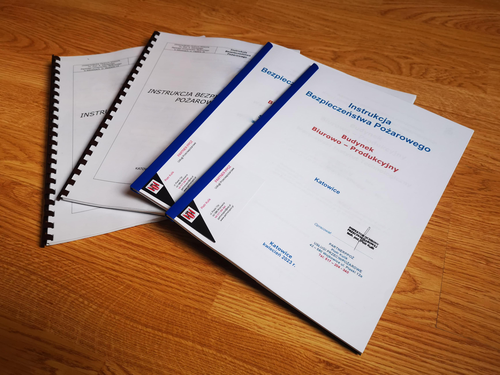

Kiedy potrzebujesz Instrukcji Bezpieczeństwa Pożarowego?
Dodano: 29.04.2023
Instrukcja Bezpieczeństwa Pożarowego to dokument określający zasady ochrony przeciwpożarowej w danym obiekcie, takim jak budynek, inny obiekt budowlany czy teren. Jest to dokument wymagany przez polskie prawo, który określa procedury postępowania w przypadku zagrożenia pożarem oraz zawiera informacje na temat systemów przeciwpożarowych, gaśnic, hydrantów oraz dróg ewakuacyjnych. Instrukcja Bezpieczeństwa Pożarowego jest ważnym narzędziem zapewniającym bezpieczeństwo osób przebywających w obiekcie oraz chroniącym mienie przed skutkami pożaru.
Jednak nie każdy budynek zgodnie z obowiązującym w Polsce prawem musi posiadać wykonaną Instrukcję. Czy jako właściciel lub zarządca budynku jesteś zobowiązany do zlecenia wykonania Instrukcji?
Jakie budynki potrzebują opracowania Instrukcji Bezpieczeństwa Pożarowego?
Instrukcja Bezpieczeństwa Pożarowego (IBP) jest dokumentem, który muszą posiadać właściciele, zarządcy lub użytkownicy obiektów o określonych parametrach. W przypadku obiektów o kubaturze przekraczającej 1000 m3, IBP jest wymagana dla obiektów użyteczności publicznej (takich jak biura, szkoły, przedszkola czy obiekty handlowe), zamieszkania zbiorowego (hotele, pensjonaty, internaty) oraz produkcyjnych i magazynowych. Obiekty inwentarskie służące do produkcji rolnej, gdzie kubatura przekracza 1500 m3, również muszą posiadać IBP. W przypadku stref pożarowych znajdujących się poza budynkami, Instrukcja jest wymagana w przypadku, gdy powierzchnia takiej strefy przekracza 1000 m2.
Jeżeli nie jesteś pewien jaka jest kubatura twojego budynku, sugerujemy skorzystanie z dokumentacji budowlanej, w której powinny znajdować się informacje dotyczące kubatury. W przypadku braku dokumentacji, można zwrócić się do urzędu miasta lub gminy, gdzie znajdują się archiwa z dokumentacją budowlaną.
Warto podkreślić, że każdy obiekt lub strefa pożarowa, w których występuje zagrożenie wybuchem, niezależnie od kubatury lub powierzchni, musi posiadać IBP
Jeżeli nie jesteś pewien, czy powinieneś posiadać w swoim budynku Instrukcję, skontaktuj się z nami! Na podstawie rozmowy pomożemy ustalić czy wykonanie dokumentacji jest niezbędne, a w przypadku dalszych wątpliwości, umówimy się na spotkanie i dokonamy lustracji obiektu i posiadanej dokumentacji budowlanej.
Jaka jest podstawa prawna wykonania Instrukcji Bezpieczeństwa Pożarowego?
Podstawę prawną w zakresie instrukcji bezpieczeństwa pożarowego stanowi Rozporządzenie Ministra Spraw Wewnętrznych i Administracji z dnia 7 czerwca 2010 r. w sprawie ochrony przeciwpożarowej budynków, innych obiektów budowlanych i terenów. W §6. rozporządzenia wymienione są obiekty, dla których istnieje obowiązek opracowania instrukcji bezpieczeństwa pożarowego oraz określone są zagadnienia, jakie powinna zawierać instrukcja.
Co zawiera Instrukcja Bezpieczeństwa Pożarowego?
Instrukcja Bezpieczeństwa Pożarowego zgodnie z wytycznymi cytowanego rozporządzenia powinna zawierać:
- warunki ochrony przeciwpożarowej, wynikające z przeznaczenia, sposobu użytkowania, prowadzonego procesu technologicznego, magazynowania (składowania) i warunków technicznych obiektu, w tym zagrożenia wybuchem;
- określenie wyposażenia w wymagane urządzenia przeciwpożarowe i gaśnice oraz sposoby poddawania ich przeglądom technicznym i czynnościom konserwacyjnym;
- sposoby postępowania na wypadek pożaru i innego zagrożenia;
- sposoby zabezpieczenia prac niebezpiecznych pod względem pożarowym, jeżeli takie prace są przewidywane;
- warunki i organizację ewakuacji ludzi oraz praktyczne sposoby ich sprawdzania;
- sposoby zapoznania użytkowników obiektu, w tym zatrudnionych pracowników, z przepisami przeciwpożarowymi oraz treścią przedmiotowej instrukcji;
- zadania i obowiązki w zakresie ochrony przeciwpożarowej dla osób będących ich stałymi użytkownikami;
- plany obiektów, obejmujące także ich usytuowanie, oraz terenu przyległego.
Kto wykonuje IBP?
Opracowanie instrukcji bezpieczeństwa pożarowego to zadanie wymagające wykwalifikowanych specjalistów z zakresu ochrony przeciwpożarowej. Osoby, które posiadają uprawnienia do wykonywania takich czynności, to m.in. inżynierowie bezpieczeństwa pożarowego, inżynierowie pożarnictwa, specjaliści ds. ochrony ppoż. oraz technicy pożarnictwa. Ważne jest, aby zwrócić się o pomoc do profesjonalistów, którzy posiadają doświadczenie oraz warsztat merytoryczny, co zapewni wysoką jakość oraz zgodność z wymaganiami prawa.
Nasza firma zapewniakompleksową obsługę w zakresie opracowania Instrukcji Bezpieczeństwa Pożarowego dla Twojego obiektu budowlanego. Posiadamy odpowiednie uprawnienia do wykonywania czynności z zakresu ochrony przeciwpożarowej oraz bogate doświadczenie i warsztat merytoryczny. Dzięki temu możesz mieć pewność, że Twoja instrukcja będzie wykonana profesjonalnie, zgodnie z obowiązującymi przepisami i normami, a przede wszystkim - zapewni bezpieczeństwo Twojego obiektu i jego użytkowników. Niezależnie od lokalizacji Twojego obiektu - czy to Katowice, czy inna część Województwa Śląskiego - zachęcamy do skorzystania z naszych usług.
Sprawdź naszą ofertę wykonania Instrukcji Bezpieczeństwa Pożarowego Powrót do listy artykułów